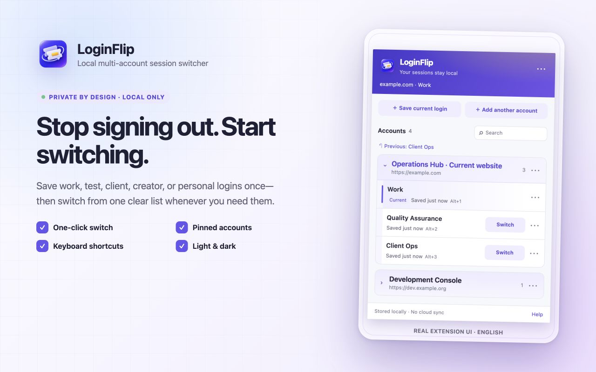
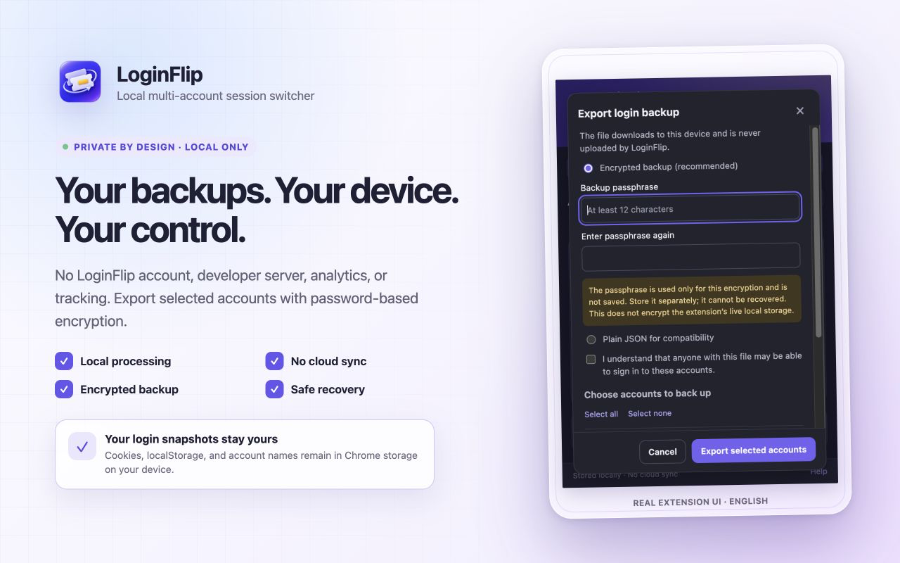

Save your first account
保存第一个账号
Sign in normally, open LoginFlip, give the account a clear name, and save it.
在网站正常登录，打开 LoginFlip，为当前账号起一个清晰的名字并保存。
Save the login state of each website account once, then switch between work, test, client, and personal accounts in seconds. 保存每个网站账号的登录状态，在工作号、测试号、客户账号和个人账号之间快速切换。
Free · Chrome 132+ · macOS & Windows 免费 · Chrome 132+ · 支持 macOS 与 Windows

Sign in normally, open LoginFlip, give the account a clear name, and save it.
在网站正常登录，打开 LoginFlip，为当前账号起一个清晰的名字并保存。
LoginFlip preserves the known account, opens a clean login page, and waits for the next save.
LoginFlip 先保存已知账号，再打开干净的登录页面，等待你完成登录并保存。
Choose an account from the list or use a shortcut. LoginFlip restores it and refreshes the page.
从列表选择账号或使用快捷键，LoginFlip 恢复状态并刷新页面。
Pin frequent accounts, keep a fixed order, return to the previous account, or use shortcuts.
置顶常用账号、保持固定顺序、返回上一个账号，也可以直接使用快捷键。
Snapshots live in Chrome on your device. There is no LoginFlip cloud or developer account.
快照保存在本机 Chrome 中，没有 LoginFlip 云端，也不需要开发者账号。
Restores applicable cookies and exact-origin localStorage, with modern partition safeguards.
恢复适用 Cookie 与完整 origin 的 localStorage，并针对现代分区 Cookie 做边界校验。
Known outgoing state is refreshed first, with limited previous-snapshot and failed-switch recovery.
替换已知账号前先刷新原快照，并保留有限的上一快照和失败切换恢复。
Export selected accounts with password encryption. The passphrase is never stored or uploaded.
选择需要的账号进行口令加密导出，口令不会保存，也不会上传。
English and Simplified Chinese, regular/incognito awareness, and System, Light, or Dark themes.
支持英文与简体中文、普通与无痕窗口，以及跟随系统、浅色和深色主题。
Login snapshots can be as sensitive as passwords. LoginFlip keeps them in Chrome local storage and does not send them to a developer-operated service.
登录快照可能和密码一样敏感。LoginFlip 将它们保存在 Chrome 本地存储中，不发送到开发者运营的服务。

Accounts do not run simultaneously in isolated containers. Expired sessions, SSO, device verification, server-side revocation, or a website's own security rules may require sign-in again.
多个账号不会在隔离容器中同时运行。登录过期、SSO、设备验证、服务端撤销或网站自身安全规则，仍可能要求重新登录。
LoginFlip handles applicable cookies and current-origin localStorage. It does not manage passwords, passkeys, IndexedDB, cross-origin iframe state, or server-side accounts.
LoginFlip 处理适用 Cookie 与当前 origin 的 localStorage，不管理密码、Passkey、IndexedDB、跨域 iframe 状态或网站服务端账号。
No. LoginFlip has no developer server, cloud sync, telemetry, advertising, or third-party analytics SDK. Website requests still follow the website's own rules.
不会。LoginFlip 没有开发者服务器、云同步、遥测、广告或第三方分析 SDK；网站请求仍按照网站自身规则联网。
No. LoginFlip does not store or autofill passwords. It switches website login-state snapshots after you sign in normally.
不是。LoginFlip 不保存或自动填写密码，而是在你正常登录后保存并切换网站登录状态快照。
Not as isolated containers in the same cookie store. LoginFlip replaces the active snapshot when you switch.
不能像隔离容器那样在同一 Cookie Store 中同时运行。切换时，LoginFlip 会替换当前活动快照。
The same extension package supports current Chrome on macOS and Windows. Chrome 132 or later is required.
同一个扩展包支持 macOS 与 Windows 上的新版 Chrome，最低要求 Chrome 132。
Use “Relogin and update” for that saved account. Website-side revocation or security checks cannot be bypassed.
可使用该账号的“重新登录并更新”。网站服务端撤销或安全验证无法被绕过。
LoginFlip 1.0.0 is now available worldwide on the Chrome Web Store. Free to install.
LoginFlip 1.0.0 现已在 Chrome 应用商店全球发布，可免费安装。